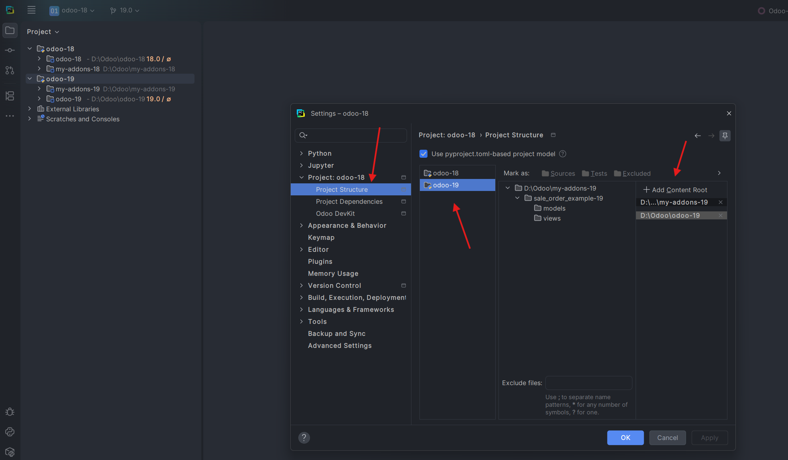
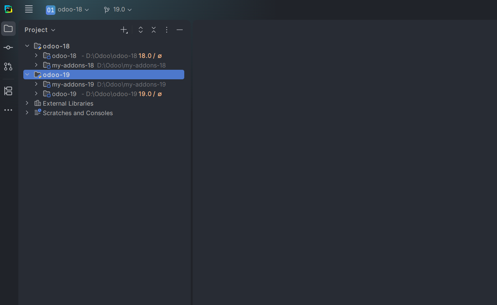
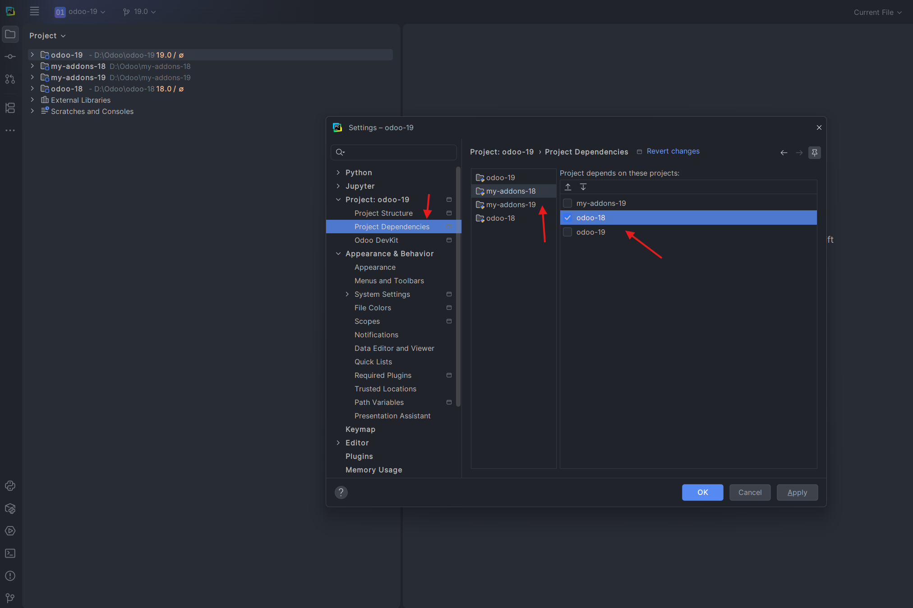
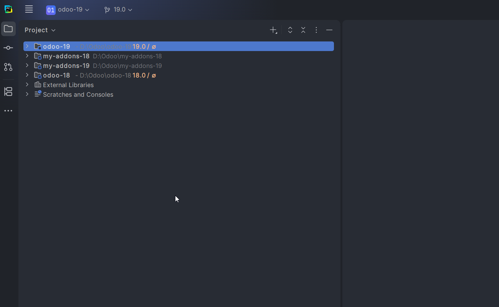

Project Structure content roots
Open an Odoo core as a project, then attach the custom-addon folder for that version in Project Structure.
DevKit uses your project structure to connect each custom-addon folder to its matching Odoo core. This lets it resolve the correct version, core models and addon dependencies while you work.
Both methods work. For most workspaces, open each Odoo core as a project and add its custom addons as content roots. Use a project dependency only when the projects must remain separate.
Open an Odoo core as a project, then attach the custom-addon folder for that version in Project Structure.
Keep each Odoo version as its own project and make the custom-addon project depend on the matching Odoo project.
Open the matching Odoo core as a project. Its folder is already its own content root; you only add the custom-addon folder for that Odoo version.
D:\Odoo\odoo-19. The core folder is added automatically as that project's content root.D:\Odoo\my-addons-19.

Use this setup when your custom addons and Odoo source are opened as separate projects. It is useful when a workspace contains several Odoo versions.
my-addons-18 depend on odoo-18.

After the IDE finishes indexing, DevKit should be able to follow the connection from an addon to the intended Odoo source.
Each addon is linked to the Odoo version it actually runs against.
Each Odoo core project includes odoo-bin or setup/odoo.
Wait for the IDE before checking completion, navigation or run actions.